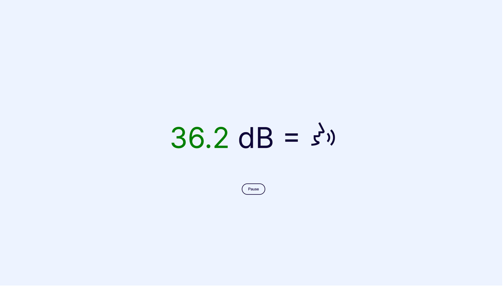

RESULTS
To present our project, we wanted visitors to Innovation Insights to experience what it feels like to be in a room with a lot of noise pollution just like the gym teachers also experience. For this, we are going to install a speaker in one of the staterooms where we will loudly play the sound of children playing sports in a gymnasium.
We want to make the sound not only audible but also visual. We will do this by setting up a screen with a live decibel meter.
We coded this concept together with the group. Together, we set up a Gitlab repository, with everyone working in their own branch and then merging them together.
I created the live decibel meter based on the decibel meter I found on soundmeter.online. It uses the built-in microphone to measure the sound. The measured value is displayed large in the centre of the screen the numbers are indicated with the same colours as in the Noice Control app. (Green for good, Yellow for attention, red for harmful). It also displays the same icon as in the app to which the decibel level equals.
CONCLUSION
LEARNING OUTCOME
Learning outcome 3: Software design and realisation
By creating and reusing software components to build a working POC with code. Working together with group members on the same project with Gitlab.
Learning outcome 7: Goal-oriented interaction
By presenting and communicating with different stakeholders or collaboration partners about the project.